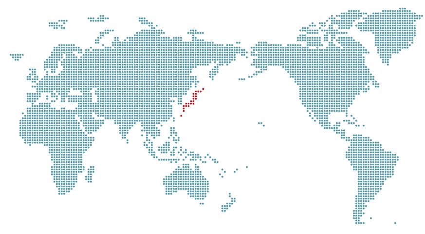
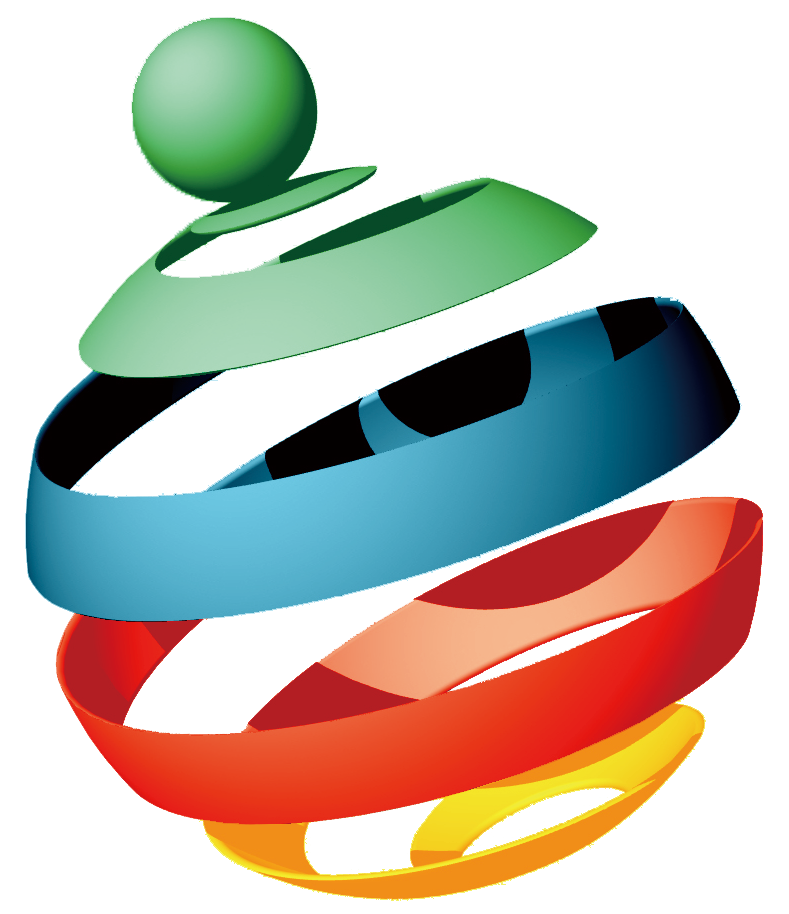
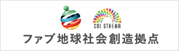

ファブ地球社会コンソーシアム
Consortium for the Global Society with Planetary Fabbing
トップ
ビジョン
参加ご案内
実施体制
活動報告
ファブ地球社会とは
デジタル
ものづくり
(
ファブリケーション
)
技術を、人間一人一人がもっている個性・感性・創造性と強く連結させることで、必要なものや新しいものを、持続的につくりだし、社会のさまざまな課題を解決する、愉しくたくましい社会です。このビジョンは、文部科学省「COI: 革新的イノベーション創出プロジェクト (2013-2021)」のビジョンのひとつにも採択されています。
本コンソーシアムについて
「ファブ地球社会」の実現を目指し、文部科学省「COI: 革新的イノベーション創出プロジェクト (2013-2021)」では、複数の大学と産業界が連携した研究開発が推進されています。本コンソーシアムは、研究開発活動と並走するかたちで、研究開発成果の実社会での応用やビジネスモデル、また適合するニーズや現場の課題について議論することを目的に発足しました。
年次報告会・中間報告会
毎年11月に六本木で開催される慶應義塾大学 SFC 「Open Research Forum (ORF)」で、コンソーシアム全体の中間報告会を開催しています。また3月には都内で全体の年次報告会を開催しています。
コンテスト・コンペティション
新しい広がりを持った3Dプリンタやファブ技術の利活用法と、それを担う人材を、多様な世代や地域から発掘するための「ファブ3Dコンテスト」を2016年より毎年開催しています。
人材育成・資格試験
3Dプリンタやファブ技術を利活用できるようになった新しい人材が、新しい職能として正しく認知され、その力を発揮できる社会を目指して、他団体の検定試験やカリキュラムへ協力や支援をしています。
水野ワーキンググループ
エンゲージメント中心社会における創造的生活者像とビジネスモデルの議論
水野
田中
三次
宮川
中澤
田中ワーキンググループ
3Dプリンタの安全な取り扱いと、表現力の高い3Dデータの標準化に関する議論
水野
田中
三次
宮川
中澤
三次ワーキンググループ
IoT技術による流通問題解決策の検討、個体識別手法の標準化に関する議論
水野
田中
三次
宮川
中澤
宮川ワーキンググループ
看護分野における3Dプリンタ品の安全な制作と使用、それを担う人材育成の議論
水野
田中
三次
宮川
中澤
中澤ワーキンググループ
中学生・高校生のプログラミング教育とものづくり教育の普及と展開に関する議論
水野
田中
三次
宮川
中澤
ワーキンググループ
慶應義塾大学 SFC（湘南藤沢キャンパス）に所属する教員・研究者が中心となって編成したワーキンググループが、運営企業とタッグを組んで、テーマごとに「ビジネスモデル」「人材育成」「社会基盤」「技術標準化」「法制度」等 に関するセミナーやディスカッション、ワークショップを開催しています。それぞれのワーキンググループは、1～2か月に1度ずつ開催されます。
コンソーシアム参加企業一覧（五十音順、2015年より）
アイティメディア株式会社
A・Tコミュニケーションズ株式会社
株式会社NTTデータ経営研究所
株式会社エムクロッシクング
株式会社all
engineer.jp
株式会社岡村製作所
オリンパス株式会社
株式会社キョーラク
サトーホールディングス株式会社
JSR株式会社
株式会社スカイスコープソリューションズ
株式会社ストラタシスジャパン
株式会社スマメ
大日本印刷株式会社
公益財団法人ときわ会
常磐病院
凸版印刷株式会社
長瀬産業株式会社
株式会社博報堂
株式会社パルコ
ピアノテクノロジー株式会社
FabCafe有限責任事業組合
富士ゼロックス株式会社
株式会社VoiceVision
ヤマトホールディングス株式会社
ヤマハ株式会社
株式会社YOKOITO
株式会社ワイエスコーポレーション
